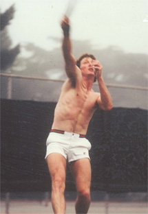
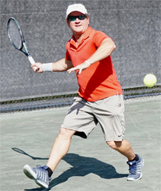
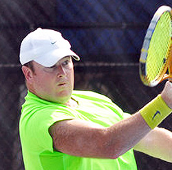
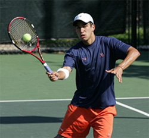
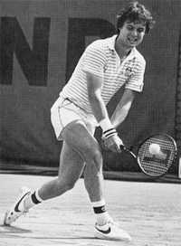
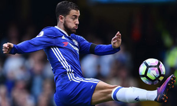
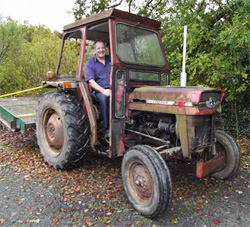
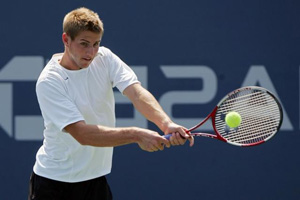
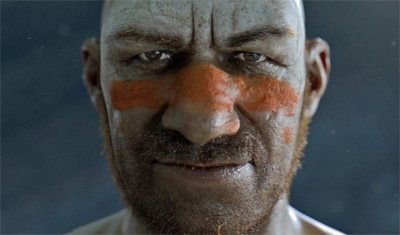
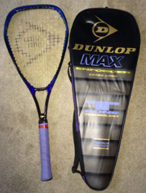

Previous: A Few Matches I Lost - and How | 🏠 Strategy Home | Next: Are You a Right Side or Left Side Player
Adapting Your Game to Win Matches
Comprehensive unified tennis knowledge base — Fundamentals, Stroke Analysis, Reference Library, and more
Adapting Your Game to Win Matches
John Yandell

That's me playing in the 1980's in the days of Fila shorts.
As Allen Fox once said there are two ways to win matches. Beat the player to death with your strengths or vary your shots and adapt your game to your opponent.
In the first variation, you need to be the better player. In the second you don't necessarily. You just need to find a way to win more points.
We've looked at many approaches to strategy in articles over the years. Both Allen's and Craig Cignarelli's patterns analysis. Ground-breaking research from Craig O'Shannessey on point duration. (Click Here.)
This article is different—a personal account of playing and winning matches in the real world. Starting in the early 1980's, over a 15-year period, I played NTRP tournaments, Norcal Seniors tournaments, and league matches. I was ranked in the top 10 several times in the 4.5's and won two 4.5 tournaments 10 years apart—back when that meant winning 7 matches in 9 days. I was also ranked in the top 20 in Norcal seniors and in the 5.5 NTRPs.
I had a solid all-around game, moved well, and was, let's say, competitive. But no dominating weapons. Most of the matches I won I tried to get every first serve and every return in play and then figure out the best backcourt diagonal to get errors from opponents and/or openings for winners or to go in.
But since my game wasn't dominating, that didn't always work. So I learned to vary my play to exploit the games of various opponents. There was a huge variety in ability and playing styles in those tournaments. Finding ways to win was challenging and fun.
No doubt the level I played at and the way I played is far closer to the majority of our subscribers than the high-level tennis we often analyze. So here are some stories of some of my matches that might ring some bells and give other players some ideas to win more matches themselves.

Jack was a banger.
Except for the first picture which is actually me, the names and photos in this article have been changed to protect the guilty and the innocent.
Jack
Jack was a banger. He hit the ball hard and clean. But not quite hard enough to be overpowering. In fact, his ball seemed perfect to hit back harder. And when I did, he would hit it back with more even pace. He loved pace.
Great exchanges! But the result was Jack took my up-pace return shots and hit them back harder for a lot of winners. I quickly lost the first set 6-0.
I didn't make many errors. He was just on fire. I said no way I am going to lose to this guy. So starting with the second set, I just matched pace with every ball he hit. This is the concept of the rhythm rally Kerry Mitchell and I developed teaching together in San Francisco. (Click Here for Kerry's article.)
It took a while but we split. At the start of the third, he looked exhausted. He wasn't used to having to play 2 or 3 or 6 extra balls a point. He started over hitting and missing. In a turnaround from the first, I won the third 6-0.

William told everyone he would volley me off the court.
The Fabulous Fatman
William was another teaching pro at Golden Gate Park where I was also teaching. Other players looked down on him because he needed to lose 20 pounds or more. I looked at his game though and he moved amazingly well going forward—it would have been scary if he actually lost the weight.
He had a smooth all-around game and great volleys. We played in an NTRP 4.5 final at Golden Gate Park. It was a show down to see who was the best player at that level on our home courts. A lot of our friends were watching and betting on the match.
William made a point of telling people that he planned to volley me off the court. And he tried. But every time he came in I hit the first ball softly at his feet. If that came back which it usually did, I tried for another low shot or two.
I only went for passes when the court was ridiculously open and made most of them. He wasn't that great moving side to side at the net. He started to try to do more with the low volleys and began making errors. He was very unhappy when I won in straight sets.

Rummy had a great kick serve and great volleys.
Rummy
Rummy was a pure serve and volleyer, but different from the Fat Man. He had no groundstrokes. A bad continental forehand and a floating slice backhand. But he had a great kick serve and amazingly high-level volleys and a deadly overhead.
I planned to use the same tactic of hitting soft and low when he came in that had worked against the Fat Man. But I could not get the ball down off his high, hard kickers—and he hit basically a double serve—the same kick on first and second. He hit one volley winner after another. And on my second serve he hit deep floating slices and came in. Annoyingly, he started doing it on my first serve as well.
He was in control and won the first set. I decided my only chance was to try to beat him up to the net.
So, I started kicking every serve to his backhand and going in myself. That didn't stop him from approaching the net as well. If anyone had been watching the match, they would have said it looked insane—both of us on the service line or inside on most points.
But since his returns floated, I was able to hit a lot of good first volleys and able to hold serve.
After a couple of games of success on my serve I started coming in on his second serve. This unnerved him just enough that I was able to squeak out a couple of breaks and won the last two sets.

Mark was a 4.5 version of Gene Mayer.
Mark
Mark was young player, maybe 20, an athletic guy with a two-handed game on both sides. The 4.5 version of Gene Mayer. He could go long or short on both sides and could hit sharp angles with pace and topspin.
We played twice and the first time, I tried hitting with him. When he hit angles, I would hit into the open court down the line. I won some points but in general he was able to cover my shot and roll the ball crosscourt the other way, hitting some for winners or just controlling the points and keeping me running until I missed, or he hit one out of reach. He won the match in two easy sets.
The second time we played I changed my patterns. I tried to hit all short slice. And I mean all short slice, even hitting mostly slice forehands. The lower, slower balls tipped the balance in the exchanges. He couldn't hit his own angles with as much pace and spin and the same was true on his drives.
He started going for more and missing. Instead of trying to drive the ball down the line on his cross-courts, I either hit additional short slices daring him to try for great shots, or hit skidding low slices deep down the middle, especially off my backhand. That made it a lot harder for him to open the court with angles.
Almost always the player who wins the most points wins the match. By changing the dynamics of the exchanges, I won just enough points to beat him in two tight sets.
Enzo
Enzo was a former professional soccer player (or so he said). He was a retriever and was known for his regular bad line calls. He didn't have much power, so his strategy was to make an outrageous call early, get you upset and cause you to self-destruct. Game versus game he should never have beaten the people he was beating.
When we got the balls from the tournament desk and headed to the court, I started talking to him as if he were my best friend. We talked pro tennis, the weather, how much we both enjoyed competing, blah, blah. He seemed shocked but pleased. No mention of his reputation, threats about what I would do if he made bad calls, etc.

Enzo was a former professional soccer player--he said.
I told myself that when the inevitable first bad call happened, I was not even going to question him. Early in the first set he called a ball out that was probably 6 inches in. I just turned and went to the baseline to serve the next point like nothing happened.
Mentally I had already decided I would give him 6 or 8 points or whatever it took. I treated it exactly the same as if he had hit a winner.
Then I resumed running him corner to corner and going in at every opportunity. He had one strategy against net players. Lob.
So, the week before I hit about 25 overheads everyday. One to the open court if it was a good lob, and hopefully the second for a winner. While practicing overheads, I visualized it was match point for me and imagined the pressure that goes with it, tried to relax and go for it. That helped in the match, and I didn't miss many.
After I beat him in straight sets, I continued talking to him like he was my best friend, congratulating him on his various wins. I thought I might have to play him again, although I never did.
Butch
One of the higher-level players I ever beat was Butch in a Norcal 5.5 tournament. He was seeded fourth or something and that win was why I got ranked in the top 20 in the 5.5's that year.
Butch had a bigger game than I did, but I was just staying with him, mainly playing defense but trying to hit an aggressive shot when I could, which was not that often.

I owed my win over Butch to the tractor.
We split sets and he was up about 3-1 in third when something weird happened. The court was at a public park surrounding by meadows and at 3-1 one of the lawn guys fired up this old incredibly loud tractor and starting mowing the meadow around our court.
You could actually feel the vibrations from the tractor. But it was varied because the guy would ride like 50 yards away from us, turn and then slowly, oh so slowly, approach and come literally up to fence of the court. The coming and the going and the increasing and decreasing noise was truly distracting, and I could tell how much it was annoying Butch trying to close the match.
I decided to go with the vibrations. Instead of fighting it I tried to put my body in synch, literally letting it vibrate at the same frequency as the tractor. It worked. I was able to play my same game, but Butch freaked and started to miss and go for crazy winners. I think I won 5 of the next 6 games to take the third.
I used to tell that story to the players on the high school teams I coached, especially when they bitched about some real or imagined distraction causing them to lose. One year the team gave me a t-shirt that said, “Have I told you my tractor story?"
Roscoe
Roscoe was a high-level player who went on to win some national senior titles, but we were both a lot younger when we played a couple of times. The first time the points went on forever from the baseline, but Roscoe hit more winners and I started to make errors trying to stay with him and lost in 3 sets.
I knew Roscoe pretty well and we practiced together. At that point in his career, he was trying to add net play to the backcourt game that was his strength. He told a few of our friends he planned to teach me a lesson by serving and volley every point—something he had never done in a tournament match so far as I knew.

Roscoe went on to win a lot of senior titles.
From the start I knew at that stage of his development it was a bluff. But there he was making one great volley after another, low ones, high ones, then scissor kick overheads.
Somehow, I knew he wouldn't be able to go the distance though. One of my friends was watching and came up and asked the score. Roscoe had run it to 5-3 serving in the second, having won the first. My friend gave me that look like “Oh, too bad."
I said, something like “I think you should stay and watch." Sure enough, at 30-15, Roscoe hit an easy forehand volley about a foot wide. Probably the first one like that he had missed.
It was the first brick out of a wall that was about to crumble. He stared to miss everything. He kept coming in on his serve, but suddenly his low volley deserted him. He choked some overheads. He got made and started over hitting returns. I felt my confidence surge and ending up running off 4 games to take the second set 7-5. The third was like 6-2 for me. It's funny how your intuition about a player can be so accurate.
Roscoe begged me many times after that to play him in practice. Finally, we went out to Golden Gate Park and fueled by what I could only call positive rage, he blew me off the court about 1 and 1.
He had a lot of talent and had worked passionately on his game. Although that bad practice loss was mildly painful, it was also great to see him mature as a player.
We've stayed good friends over the years, but I always remind him, particularly after he wins a title, that I am one and one lifetime with him and won the last match that mattered. It makes him seethe, but I always get a smile out of it.
Mitchell
Mitchell was a Neanderthal. That's how he looked and acted—although that could be an insult to Neanderthals. He was a member of the San Francisco Tennis Club as I have been for 30 plus years. I'd be in the weight room doing incline bench presses and he would come over, push the bar down on top of me and yell, “Put some weight on it."
I'd tell him to get the fuck away from me. Mitch took up tennis in his 20's. He took some lessons from Brad Gilbert. He was always bragging about his 120mph serve, supposedly measured in some radar cage.

Mitchell gave Neanderthals a bad name.
He'd seen me play practice matches at the club and kept telling me how he would crush me. I told him, enter some tournaments Bucko and you can maybe test that claim. But of course, he never did.
One Saturday morning I was up on the roof at the club, minding my own business, reading the paper. Mitch was playing some other guy on a court nearby. Unfortunately, he came over and started telling me how I was afraid to play him.
That sent me over the edge. I didn't even have my rackets. I told him I going to beat him 6-0 with his own racket and took his extra racket—some hideous heavy club. He was very excited. He may have been drooling.
Now I had seen Mitch play and I knew he had literally no backhand and I mean literally no backhand—he tried to hit the one-hander with an eastern forehand grip. He could barely get it over the net and could only hit down the line when it went in.
His vaunted 120mph serve went in about 20% of the time. Again, he used a forehand grip and so it was almost totally flat. I stood way back and just blocked every first serve to his backhand. I didn't miss one return. If he got it back, I just hit the ball to his backhand until he missed—usually within 2 balls.
I kicked all my serves to his backhand and he may not have made 3 returns. No matter what I hit every ball that come back to his backhand—no matter how open the court was. I don't think he actually hit a forehand. He won maybe 3 points and I beat him 6-0 in about 20 minutes.
After the set he didn't say a thing, just stormed off the court. I left his racket at the net post—no idea if he ever got it back.
The next week I got a call from Mitch. He wanted to come over to my private court and take a backhand lesson. I thought of saying no, but then thought, this will keep him out of my face at the club.
I changed his grip, and he made a little progress. A few months later he got married and quite the club. I never saw him again.
Victor
Victor was probably the most challenging and annoying guy I ever played. It's my favorite win of all time. This was in another 4.5 final. After I won my semi, I went over to catch the end of the other semi-final match. The guy I expected to play in the final was a Division 2 college player I had seen before with a gorgeous, technical game who took the ball early and was really accurate.
When I got there, I couldn't believe what I was seeing. Victor was camped 10 feet behind the baseline hitting only, and I mean only, 30-foot high moonballs. He had one of those old Dunlop rackets that had almost a triangular head—somehow it felt like the racket shape was part of his mental game.
Frequently when he won a point, he would feign a stretched wide stance leg position as if he had hit a running winner, although usually the point ended with an error from the other guy trying to blast one of his moon balls. Then Victor would hitch up his shorts and shout, “Michael Chang!" On the changeovers rather than sitting on the bench he would go to a corner of the court and assume a yoga lotus position.
By the time I arrived, the other guy was muttering out loud. “This is no fun. I hate tennis. I hate you." Close to the end Victor made a ridiculous bad call. The other guy challenged him angrily, and Victor replied, “For your comfort, I suggest you may get a linesman." It was way too late for that.

Who would play with a racket with this head shape?
I was so glad I had taken the time to show up and witness it, or I would have been blind-sided. I decided to use the “mirror" strategy I wrote about in an article on how to beat pushers. (Click Here) I told myself that even if it took me 6 hours, I was not going to lose to Victor making errors off his moonballs, and that I would wait 10 or 20 balls if necessary to try to attack.
I also used the best friend’s strategy that was so effective with Enzo—I even asked him before the match if we could become practice partners. He was flattered. I was lying. The match started and immediately he slowed the pace way down with his moonballs. He could really only hit them to the center of the court, so I would try to back him into a corner with moonball replies.
Sometimes I would mix in medium pace deep drives but I swore to god I would not over hit. When he hit a short one I would come in and volley it in the air, and then get ready to hit an overhead. I usually treated the first overhead like an approach. I won quite a few points off the third or fourth overhead and won the first set.
I felt a lot of tension in the second though because I wanted to win this tournament and I choked quite a few volleys and overheads and it went 3. In the third I worked in a new dimension.
I mixed in a few drop shots even though it was hard to hit great ones off the moonballs, but they did get him into the front half of the court, and I got some lobs over him. Over the course of 3 sets he made a handful of questionable calls and also did the Michael Chang impersonation and yoga, but I was ready and refused to react.
I finally got to match point, ad out on his serve. His missed his first serve, and then he cracked. He changed his serve motion and tried to push in a second serve with what looked like a badminton shot, but he hit it about an inch out.
Under normal circumstances I probably would have played it. Instead, I caught the ball with my left hand and said something like “great match." He was really angry, questioned my call, but I just ignored him and walked up to shake hands.
The match had taken over 3 hours and it was about 90 degrees. When I walked off the court, my wife, who was watching and wilting in the heat, asked me “Why did that take so long?" I broke out laughing I was so happy.

John Yandell is widely acknowledged as one of the leading videographers and students of the modern game of professional tennis. His high speed filming for Advanced Tennis and Tennisplayer have provided new visual resources that have changed the way the game is studied and understood by both players and coaches. He has done personal video analysis for hundreds of high level competitive players, including Justine Henin-Hardenne, Taylor Dent and John McEnroe, among others.
In addition to his role as Editor of Tennisplayer he is the author of the critically acclaimed book Visual Tennis. The John Yandell Tennis School is located in San Francisco, California.
Source: tennisplayer.net archive — Adapting Your Game to Win Matches.docx (John Yandell teaching library, 2002-2022). Extracted and rendered as HTML for Tennis Future Lab.